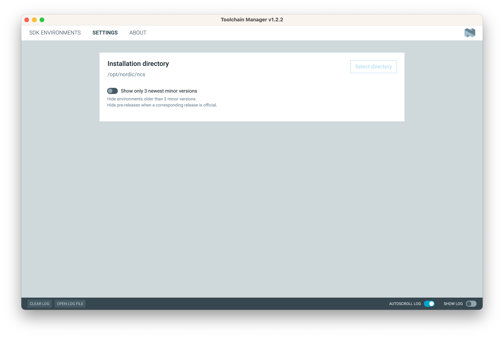
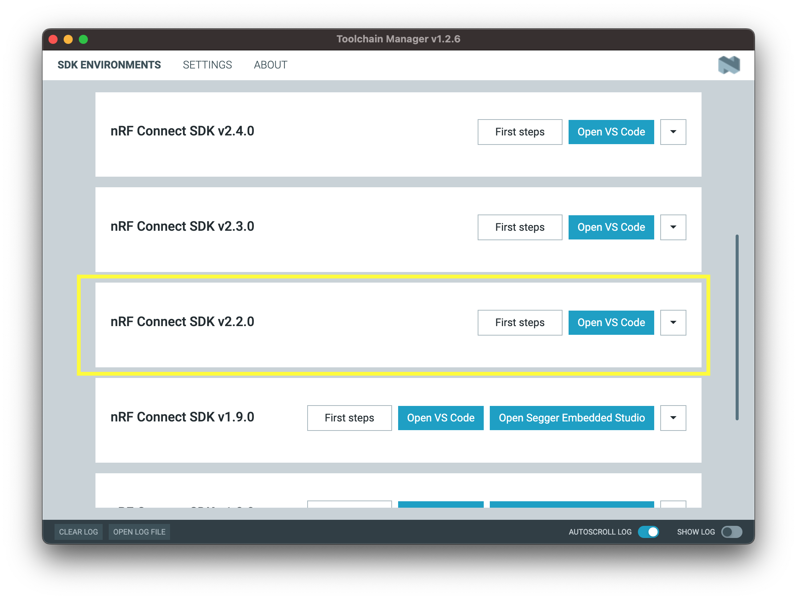
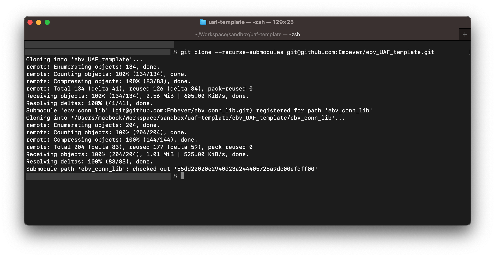
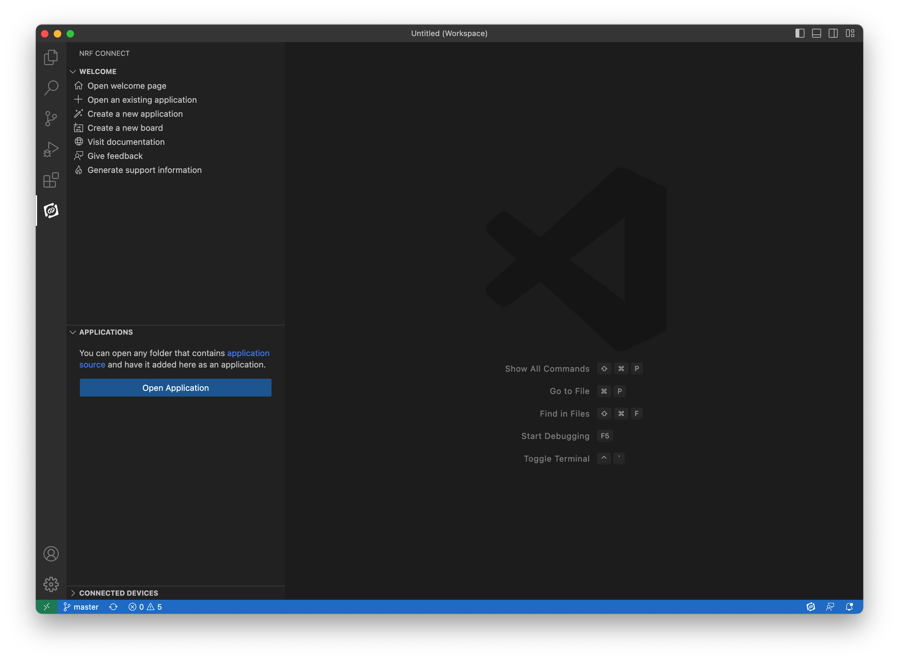
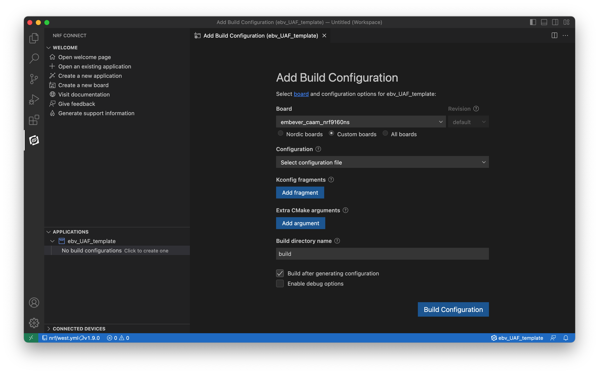
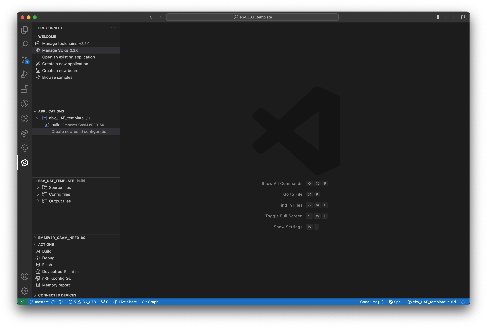
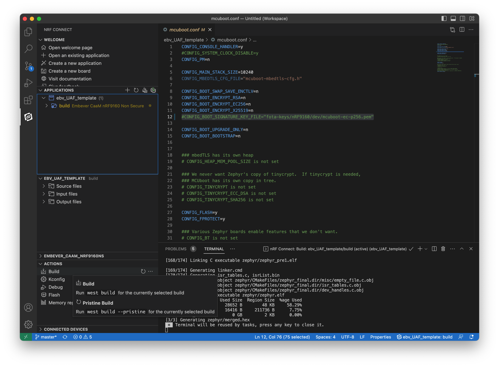

Quick Start: Send telemetry data to the cloud using Embever IoT Integration Platform
Embever IoT Integration Platform enables you to build IoT applications with the focus solely on the application logic by providing the secured managed connectivity out of box. In this quickstart, you will use an example application to send device telemetry to the cloud. You will use the Embever IoT Core Browsable API to see the telemetry data. This article shows the basics of how you can make use of Embever IoT Integration Platform to build an IoT application with the cloud connectivity.
Prerequisites
- Make sure you have an Embever IoT Core account before you begin. see Creating Embever IoT Core Account
- System on Chip supported by Embever IoT Integration Platform with SIM card provided by Embever. Currently Embever IoT Integration Platform supports nRF9160 only. You will need a SIM card in the form of e-SIM or simply an external sim provided by Embever to connect to the Embever IoT Core Cloud services. The easiest way to get started is to get Cloud as a Module Development Kit from here which comes up with the supported SoC, embeded sim card and extra pheripherials. Alternatively you can use Development kit like nRF9160 DK.
- Visual Studio code installed in your development machine.
Sign in to Embever IoT Core Browsable API
Sign in to Embever IoT Core Browsable API. Keep the portal open in your borwser. You use it in this quickstart.
Make sure you have a sim card allocated to your organisation
You can see the list of available sim cards in the Browsable API under the SIM resource.
Make sure the sim that you want to use is in the list of sims and is activated. You can check the iccid attribute of the SIM resource with the ICCID of the sim card that you have with you.
Create a Device in Embever IoT Core
A Device instance in Embever IoT Core is the representation of a single physical IoT device.
Note
If you are working with CaaM Development Kit provided by Embever, you can skip this section. Embever already created a device for you which you can see it in the list of your devices under https://api.embever.com/v2/devices/ Devices API Endpoint
You can create a Device instance using the Browsable API or from any other tools like Postman or curl or from your own custom script. In this quickstart we will create a Device instance that represents your IoT Device using the Embever Browsable API.
- On your browser open https://api.embever.com/v2/devices/. Make sure you are logged in with your account credentials.
- Goto the End of the page, you should see a form to save device data. You can use either HTML form or Raw Data to make a post request to create a device. We will use Raw Data for this example.
- On the Raw Data set the Media type field to application/json.
- On the content field. Put the following.
For this example we will set the basic required fields only. You can follow the Embever IoT Core REST API documentation for further details. Replace
{ "name": "<your_device_name>", "activated": true, "sims": ["<iccid_of_sim>"] }<your_device_name>with a unique name, the name of the Device should be unique within your organisation. Replace<iccid_of_sim>with the ICCID of the SIM card that you have on your Device at hand. - Click the POST button. This will create a Device in Embever IoT Core. You should see somthing like this after the Device is scuccessfully created.
Now that you have the representatin of your real physical Device in Embever IoT Core you can now proceed with running a smple applicaiton on your IoT Device to send some telemetry data.
{ "url": "https://api.embever.com/v2/devices/4w4QD/", "id": "4w4QD", "name": "<your_deivce_name>", "password": "**********************", "activated": true, "application": null, "webhooks": null, "meta": null, "sims": ["<iccid_of_sim>"], "created_at": "2024-06-14T07:37:23.361080Z" }
Run Sample Application on your IoT Device
Embever IoT Integration Platform offers an Application Framework designed to simplify and speed up IoT application development. This framework delivers essential IoT functionalities out of the box, eliminating the need for developers to implement them from scratch. With built-in support for telemetry data transfer, file transfers, firmware updates, and more, the framework handles complex connectivity, protocol management, and security implementations, allowing developers to focus on creating their applications. Read more about Application Framework here.
We will now see how to use the Application framework to build a sample IoT applicaiton which sends telemetry data to the cloud.
Step 1: Setup the environment Nordic Connect SDK.
To set up the nRF Connect SDK, follow the official guide written by Nordic Semiconductor team here. Choose the nRF Connect SDK version 2.2.0 from the Toolchain Manager.
Note
If this version is not listed on the Toolchain Manager, change the setting of the application based on the screenshot below.

Note
If the mentioned SDK version is not listed, turn off the “Show only 3 newest minor version” option on the Toolchain Manager settings page.
To exploit all the possibilities of the development experience, review this page as well. To verify the local development environment, try to compile and upload one of the nordic sample application.

https://github.com/Embever/embever_docs/blob/hardware/docs/tutorials/embedded/uaf/uaf_env_setup_guide.md
- Clone Application Framework repository from Embever https://github.com/Embever/ebv_UAF_template
Step 2: Get a local copy of the Embever User Application Framework Template
To get a local copy of the of the CaaM User Application Framework template, clone the repository listed below, or use the distributed archive.
Note
Note, this repository contain submodules which are necessary for its operation.
Use the following command to make sure that the submodules are downloaded as well.*
git clone --recurse-submodules git@github.com:Embever/ebv_UAF_template.git

The Application Framework repository already contains some sameple applications to get you started. You can find the sample applicaitons under the folder /samples. In this quickstart we will work with
<application name>. This application sends sample telemetry data from your Device to the cloud.
Step 3: Working with the UAF template
To start working with the UAF template, open the nRF Connect SDK IDE, which is the Visual Studio Code with the Nordic nRF Connect SDK plugin. To do that, click on the "Open VS Code" button in the nRF Connect Desktop Toolchain Manager. Importing the UAF template is as simple as clicking to the Open Application button after selecting the nRF Connect extension tab on the sidebar in VS Code.

Opening the UAF template as and existing application by the Open Application button As the application opened successfully, the next step is to define a build target


Build configuration successfully defined, SDK and toolchain version set to 2.2.0
Step 5: Crypto keys for binary encryption
To embed secure firmware update into the deployment process, the firmware binary has to be signed with a unique key. Ignoring this option and using the default keys of the SDK is not forbidden for internal development, but as soon as the firmware pass the development stage, it is recommended to use a custom keys to maintain security.
Note
To use the default keys to sign the firmware binaries, remove ( or make the line begin with the # sign to disable it) the following line in the mcuboot.conf file.
CONFIG_BOOT_SIGNATURE_KEY_FILE="fota-keys/nRF9160/dev/mcuboot-ec-p256.pem"
To generate a custom signing keys, follow this guide written by the Nordic Semiconductor team.
The newly generated keys can be places to any location and they can be referenced with they absolute path. Using a relative path is also possible ( like the default value of the CONFIG_BOOT_SIGNATURE_KEY_FILE ). In this case the base directory of this relative path is the following location:
<nrf_sdk_base>/<version_number>/bootloader/mcuboot
As an example, the absolute location of the signing key is : /opt/nordic/ncs/v2.2.0/bootloader/mcuboot/fota-keys/nRF9160/dev/mcuboot-ec-p256.pem
Step 6: Build and Flash
To build the application, use the Build Configuration button or use one of the built-in build tasks of the nRF Connect extension.

Step 7: Run the sample Application on your IoT Device
.........
View sent telemetry data in Embever IoT Core Browsable API
Embever IoT Core REST API lets you interact with the devices on the Embever IoT Integration Platform. We will use the Browsable API to see the telemetry data sent by the device.
On your browser go to https://api.embever.com/v2/events/?device=<your_device_id>. Replace your_device_id with the id of your Device in the API. Events are the representation of data that is sent from the device to Embever IoT Core. Event object contains a type which denotes an specition occurence in the device and the payload contains the additional information of this occurence. In our case the telemetry data is sent as the payload of occurence of the event "
[
{
"url": "https://api.embever.com/v2/events/123456/",
"id": 123456,
"device": "my-test-dev",
"sim": "8988XXXXXXXXXXX",
"type": "samples",
"payload": {
"temp": 20
},
"created_at": "2024-06-05T14:44:38.497395Z"
}
]
Furthermore, Embever IoT Integration Platform provides and easy way to automatically send these telemetry data to any cloud application. See How to send data from Embever IoT Core to you application Embever IoT Integration Platform also provides an integration with Salesforce and Azure IoT Hub so that the data sent by the Devices can be used on your Business applicaitons. See Integration with Salesforce and Integration with Azure IoT Hub for more details.
Next Steps
.....